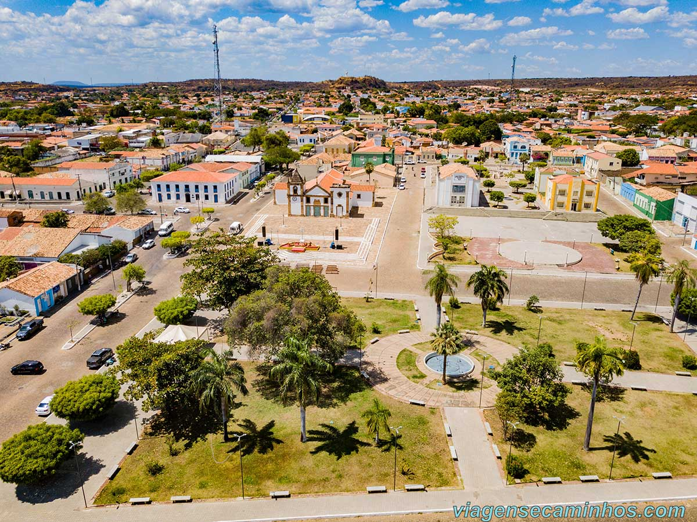

O Piauí é um estado brasileiro do Nordeste, com uma população de aproximadamente 3,27 milhões de habitantes (segundo o IBGE, 2022). Em 2020, seu Produto Interno Bruto (PIB) foi de R$ 64 bilhões, o que representa 0,7% do PIB nacional. O PIB per capita foi de R$ 17.185 em 2020, ocupando a 26ª posição no ranking nacional,. A economia do Piauí é diversificada, com destaque para a agricultura, especialmente a produção de grãos e a agricultura familiar, e para o setor de serviços. A indústria é menos desenvolvida, mas o estado tem se destacado em energias renováveis. O Piauí possui uma rica diversidade cultural, com manifestações como o Bumba-Meu-Boi, o Cavalo Piancó e o Samba de Cumbuca, e abriga importantes atrativos turísticos como a Serra da Capivara e o Delta do Parnaíba.
